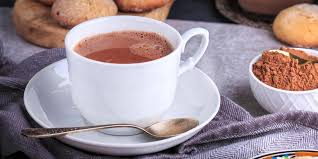

Inspírate, cocina con pasión y saborea
momentos inolvidables en la mesa
DELICIAS DESTACADAS

Waffles
Los wafles son una masa crujiente con forma cuadriculada, cocinada en una waflera. Se sirven comúnmente con miel, frutas o crema.

Pancakes
Los pancakes son panecillos planos y esponjosos, cocinados a la plancha. Se suelen servir con miel, frutas o mantequilla.

Chocolate caliente
El chocolate caliente es una bebida dulce hecha con leche y chocolate derretido o en polvo, ideal para climas fríos.